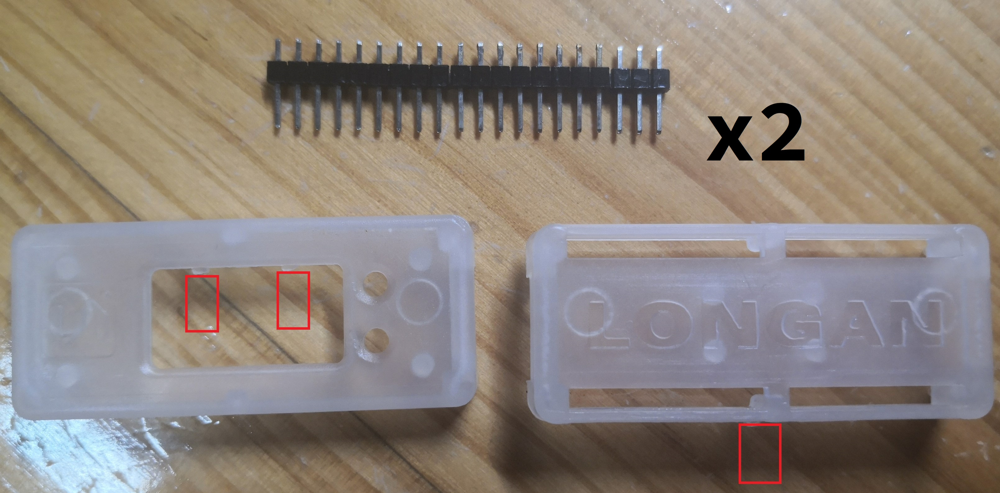
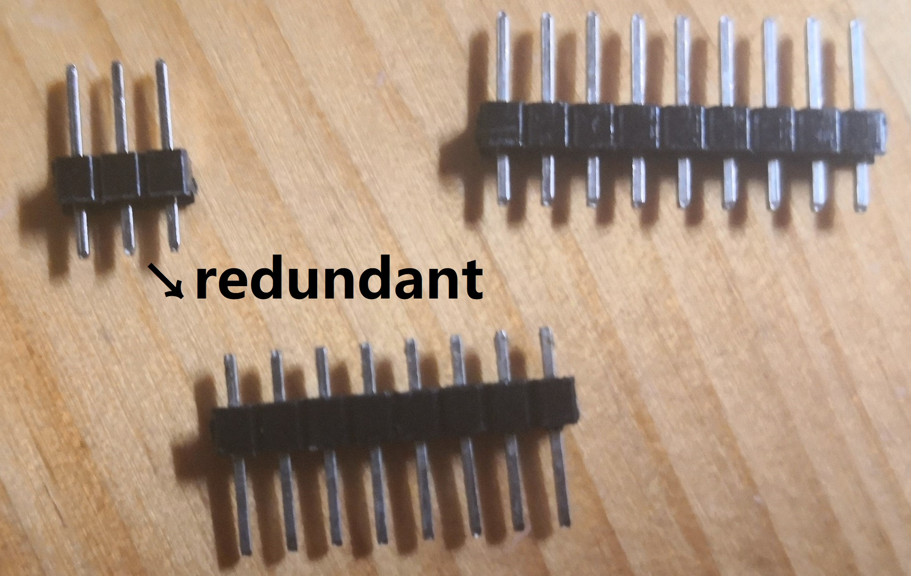
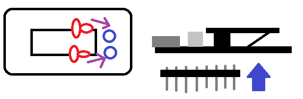

Longan Nano is a mini development board based on a RISC-V 32-bit core. And that's why we're using this - Project 4 is based on this board.
The official documentation can be found here.
First, since Longan Nano is based on RISC-V architecture and our PC is not, we have to do cross compile in order for our program to run on this board. Luckily, Longan Nano has official support for a third-party platform PlatformIO and it will handle all of these.
To install PlatformIO, make sure you have installed Python3 and pip3. Run this in command: (you may need to replace python with python3 or something)
python -m pip install platformio
Also, clone the example project here.
To compile the example Project, run this in project folder:
python -m platformio run
It may take quite a while when first run, as it will automatically install necessary dependencies. The output file will be .pio/build/sipeed-longan-nano/firmware.bin together with other files.
To download the executable file to the development board, you need to first connect the board to your computer via a Type-C cable; then follow the below steps to enter DFU mode of the board (so that you can download files to the board.)
It may require several attempts for this process to succeed. If done successfully, the screen of board will be frozen or become pure black, and you'll be able to detect this device via the following command:
./dfu-util -l | grep 28e9:0189
If there is some output, it means that your board has entered dfu mode successfully and is found by your computer. Please don't use the dfu-util provided by apt-get or PlatformIO, as it's known to have bugs.
Then, you can download the executable to the board:
./dfu-util -a 0 --dfuse-address 0x08000000:leave -D .pio/build/sipeed-longan-nano/firmware.bin
This command may raise an error such as "Error during download get_status" in the end; but it actually doesn't matter. If you meet some problems like "Permission denied" in the above steps, please use sudo.
After it's finished, press RESET button. Now you can see 5 lines of "Hello World" on the screen!
We've also provided you a Makefile in the example project folder (You may need to modify its first line). Run make to compile the source code and make download to download the executable to board.
In the following Project 4, you are asked to implement main functionalities in RISC-V. However, you can call C functions in RISC-V, just like calling a RISC-V function; conversely you can also call a RISC-V function in C.
To implement a RISC-V function that can be called via C, use a0-a7 as input parameters sequentially, and use a0 as output. For example:
// C code int a = add(3, 4, 5); // a = 12 # RISC-V code # ... add t0, a0, a1 # a0 - 3, a1 - 4 add t0, t0, a2 # a2 - 5 mv a0, t0 # a0 - return value # ... ret
Another example for RISC-V code calling C functions:
# RISC-V code
li a0, 1;
li a1, 2;
jal sub # a0 = -1 after this step
// C code
int sub(int a, int b) // a - 1, b - 2
{
return a - b;
}
Most of RISC-V grammar here is the same as in Venus. You don't need to somehow "include" C headers in RISC-V files as PlatformIO will automatically detect and locate them.
Please read /src/lcd/lcd.c carefully. You'll definitely need many of those functions in Project 4.
For this lab, you need to modify draw.S and call some LCD functions in draw.S to draw a circle, a square and some arbitrary characters on screen.
The Longan Nano we distributed to you contains not only the board, but also a set of housing and pins:
There should be a button in each of those red rectangles. Cut them down.
Split the pins like this pattern so you can fit them into the housing.
Solder the pins to the board. You'd better solder all the pins or it would easily get loose. Also, Insert the buttons to the top part of the housing like this.
Then you can fit the board in, put on the other part and close it; then the board is done!
The main thing is that you connect your 2 buttons such that: One pin of the button is connected to +5V (or: +3.3V) port on the board; the other connects to an "A" port which accepts an analog input and converts it to digital signal, so our program can detect this.
Please refer to Discussion 19 for details.